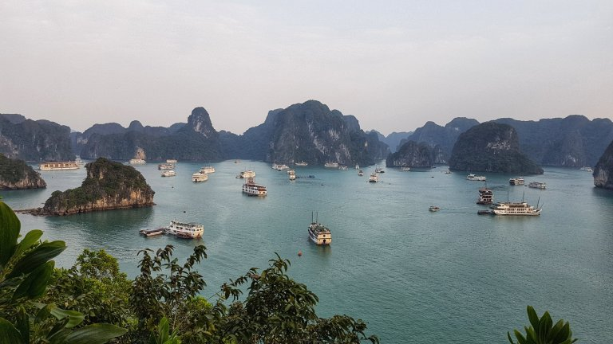
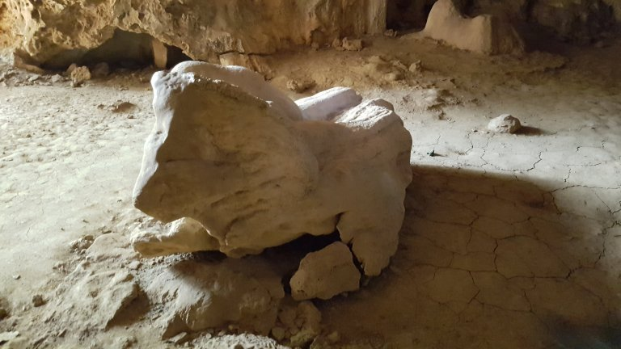
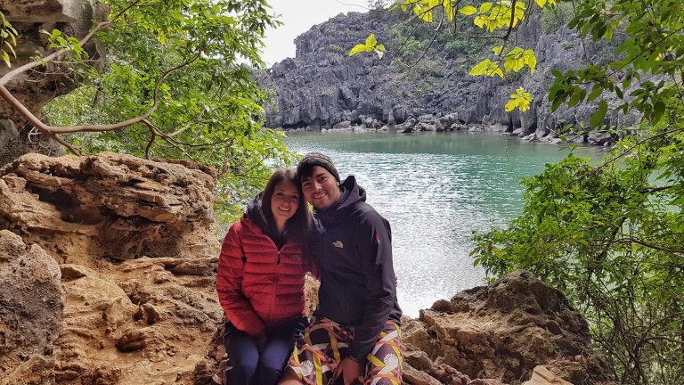
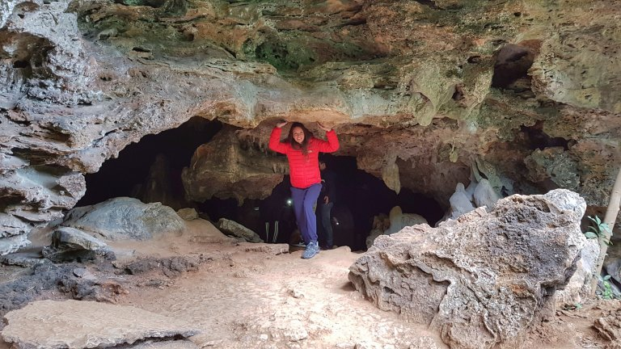
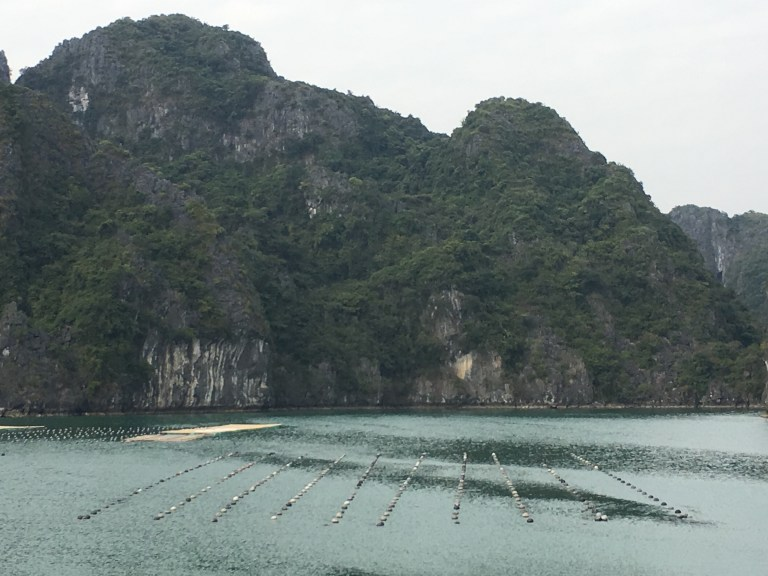
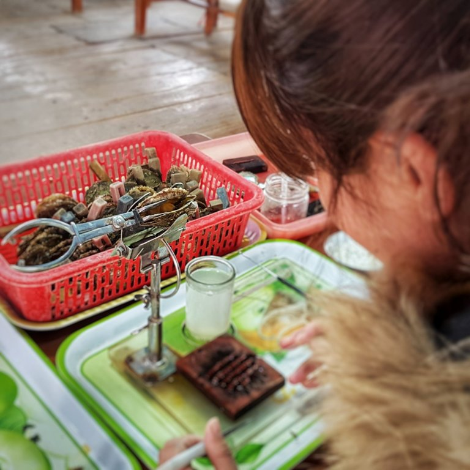
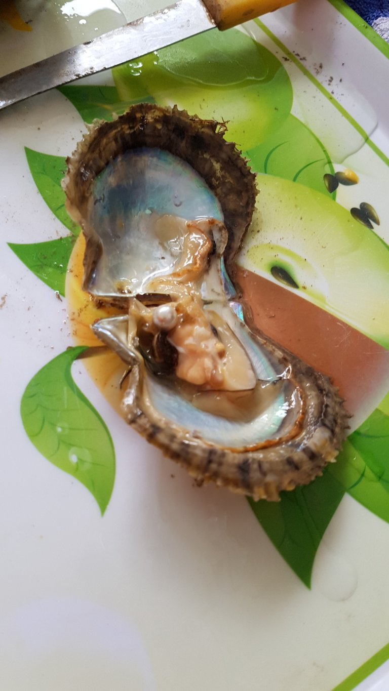
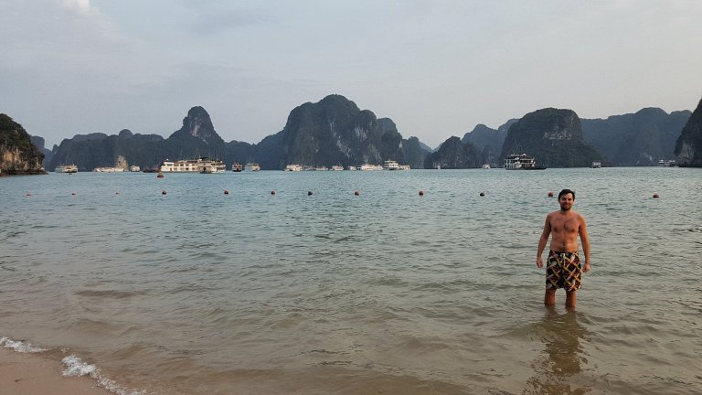
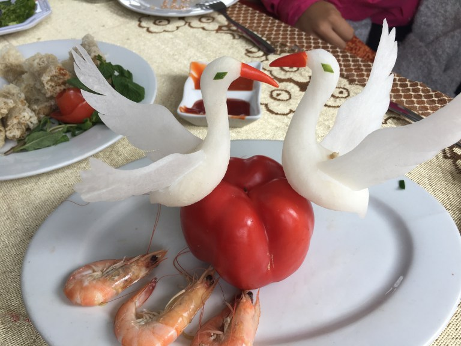

La sveglia suona alle 6:30, la giornata in mare inizia presto e al risveglio segue subito una lezione di thai chi sul tetto della barca.
La baia in cui abbiamo pernottato ospitava una cinquantina di barche come la nostra, e tutte pian piano iniziavano a muoversi verso le proprie destinazioni. A noi si proponeva una giornata con diverse tappe sparpagliate per la baia.
Il primo punto d’interesse e stata la Grotta del Leone, grotta una volta usata dai pescatori locali per celebrare matrimoni e passare la notte di nozze.
A differenza della Surprise Cave visitata ieri, questa era completamente allo stato naturale: buia, scivolosa ed oltre al nostro gruppo in visita, non c’era nessuno. Alcune rocce all’interno della grotta apparivano magiche: se illuminate sembravano riflettere la luce come fossero ricoperte di polvere di cristallo… uno spettacolo nella grotta così buia!
Un’apertura nella seconda stanza della grotta rivelava un lago di acqua salata nascosto agli occhi di chi navigava la baia.
 La terza ed ultima stanza della grotta era accessibile solo tramite una piccola apertura che ci ha messi letteralmente con le ginocchia a terra. Mentre all’esterno tirava un’aria fredda, al suo interno si respirava un’aria umida e calda. Picchiando con una pietra su una parete della stanza, tutta la stanza risuonava in diverse tonalità in base a dove si colpiva la roccia!
La giornata prosegue, e anche oggi per pranzo ci vengono serviti principalmente piatti a base di pesce e frutti di mare: granchio fritto, clamari impanati, ostriche.. Insomma diciamo che, se per molti questi piatti sono delle delizie, per noi due adoratori della carne terrena, di pasta e pizza, è stato molto difficile 😅.
Nel pomeriggio abbiamo visitato una “coltivazione” di ostriche da perla. Con più di 1 milione di ostriche di vario tipo ed età, questa struttura ne insemina ogni giorno più di 400, preparandole al processo che le stimola alla creazione di una perla.
Il processo di inseminazione prevede infatti di inserire un corpo estraneo all’interno dell’ostrica (qua veniva usata della madre perla, ovvero una parte elaborata del guscio di una conchiglia). Essa riconosce l’intruso inseritole come un corpo estraneo e, incapace di espellerlo, inizia lentamente ad isolarlo con molteplici strati creando, dopo anni di attesa, una perla.
 Durante il ritorno alla baia dove avremmo passato la seconda notte, abbiamo sostato su un’isola (Titov Island) in cui, dopo essere saliti in cima alla montagna ed aver scattato qualche foto alla baia dall’alto, abbiamo avuto modo di fare il bagno! Anche se le temperature non erano delle migliori (12-15 gradi), come avrei potuto rinunciare a fare un bagno nella bellissima baia di Halong?
Dopo cena ci siamo dati allo squid-fishing, ovvero alla pesca dei calamari. Con l’aiuto di una speciale lampada e muniti di canna da pesca, ci siamo posizionati sulla poppa della barca attendendo i calamari. In teoria la luce della lampada avrebbe dovuto attirarli.. Forse, a causa delle troppe barche appostate nella baia, o siccome la stagione della pesca di calamari è in un altro periodo dell’anno, di calamari ne abbiamo visto solo uno durante tutta la sessione di pesca (Giada si è emozionata troppo, e muovendo bruscamente la canna con cui pescava, gli ha fatto espellere l’inchiostro per poi scappare!).
Nonostante la pesca non sia stata un successo, andiamo a letto felici dopo aver saputo che l’indomani in mattinata ci avrebbe atteso un brunch.
Dormire sul mare è stata un’esperienza molto bella, il silenzio era intenso, e il risveglio al mattino con la vista sugli spuntoni di Halong è stato spettacolare!
L’ultima giornata della crociera, durante la navigazione verso la terraferma, lo chef della barca ci ha deliziato con una dimostrazione di fruit carving, ovvero di come tradizionalmente alcuni piatti vietnamiti vengano abbelliti da composizioni di frutti intagliati che rappresentano diverse forme animali o naturali. Inoltre, abbiamo seguito una breve lezione di cucina in cui abbiamo preparato degli spring rolls vietnamiti (non fritti).
Giada prepara spring roll – – > esce uno sgorbio – – > no foto! 😂
Questa crociera nella baia di Halong è stata molto bella e interessante! Staccare per un paio di giorni dal traffico vietnamita attraversando la baia in mezzo agli spuntoni di roccia che fuoriescono dall’acqua, dormire sulla barca e visitare luoghi così particolari ci ha lasciato tanti ricordi che non dimenticheremo facilmente.
Comment Section